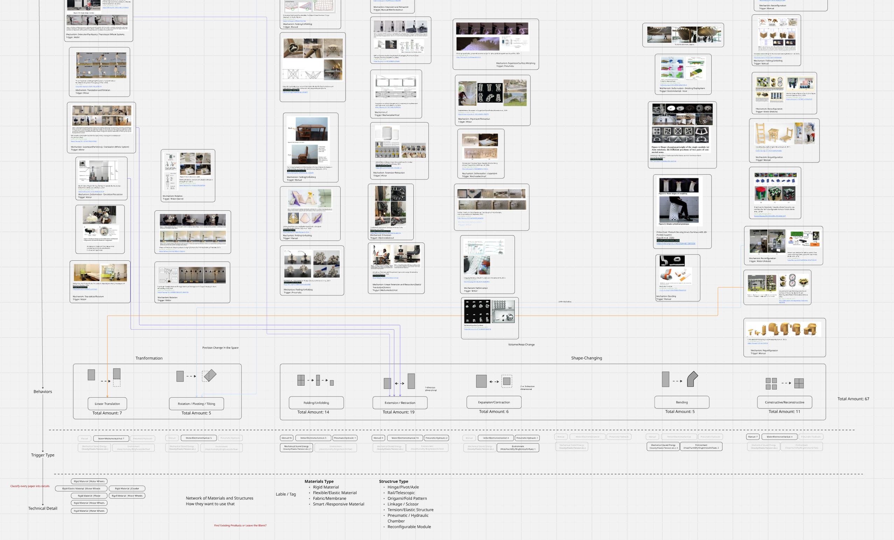
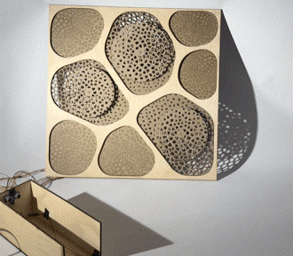
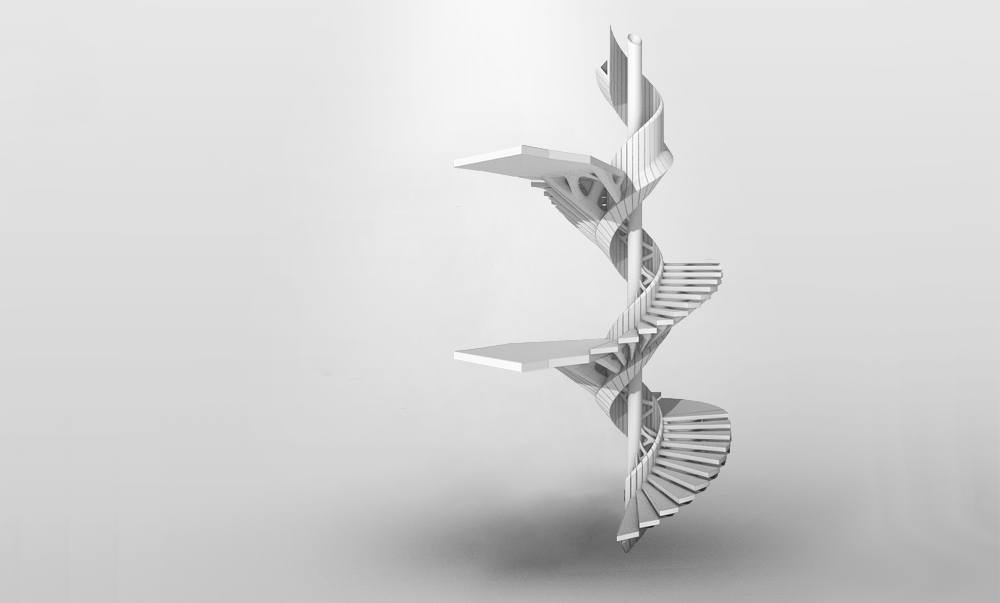

Hello.
I'm Junke. I'm an incoming Ph.D. student in Computer Science at DE4M Lab, UT Dallas, advised by Prof. Liang He. Before this, I obtained my Master of Science degree in Computational Design from Carnegie Mellon University in May 2025, and obtained my Bachelor of Architecture degree from Southeast University in June 2023.
My research at the intersection of design and technology reimagines physical environments as active, responsive media. While we spend more time immersed in digital spaces, I believe the tangible world is what truly shapes our experiences. Driven by the belief, I leverage computational design, tangible interaction, and ubiquitous computing within HCI to bridge the digital and physical. To this end, my work spans three interconnected directions:
Spaces that Understand
I explore how everyday environments and objects can sense, reason about, and proactively respond to people's needs through embedded intelligence.
People who Shape
I explore how AI-assisted user participatory design and fabrication tools can empower non-experts to engage in creating and customizing their physical surroundings.
Realities that Blend
I explore how spatial computing can extend the capabilities of physical environments through context-aware virtual augmentation.
News
Joined DE4M Lab at the University of Texas at Dallas as a Research Assistant, advised by Prof. Liang He.
Graduated from Carnegie Mellon University with the M.S. in Computational Design.
Started Research Assistant position at the Design Fabrication Lab, Carnegie Mellon University.
Research Projects

Beyond Furniture: A Taxonomy and Personalized Design Platform of Transformable Furniture Made with Digital Fabrication Technologies for Domestic Usage


2024
Kinetic Shades
Exploring the spatial experience resulting from user interaction with building facade design through an adaptively sensing curtain wall system enabled by digital fabrication and physical computing.
2023
Track Your Commute
An interactive widget that visualizes your daily commute by combining real-time weather and bus schedule data.

2022
The Weaving Cloud
Prefabricated 3D printed architectural design explores breaking through the size limitations of 3D printing equipment by using a method of layered printing and structural reinforcement.
Recent Experiences
The University of Texas at Dallas
Research Assistant, Aug 2025 - Present
Carnegie Mellon University
Research Assistant, Aug 2024 - Jan 2025
Education
Carnegie Mellon University
Master of Science in Computational Design, Aug 2023 - May 2025
Southeast University
Bachelor of Architecture, Aug 2018 - Jun 2023
ETH Zurich
Joint Program, Architecture, Sep 2019 - Jun 2020